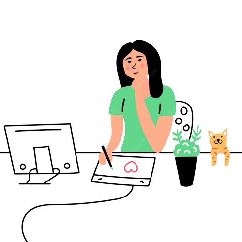

Proyectos de CSS
Se pone en práctica el uso de HTML y CSS. Primordialmente se le da énfasis al uso de modelos de cajas.
El sitio actualmente posee información estática, con la idea de más adelante implementar JS y cambiar el mismo a una versión dinámica.
